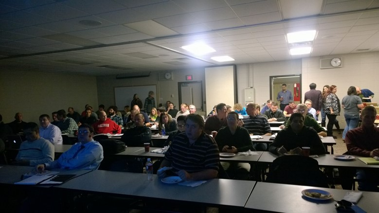

Thanks to everyone who came to my Fox Valley .NET User Group presentation last Wed, Nov 13, 2013 on AngularJS. There was a GREAT turnout! Close to 70 people showed up, which was great for a Wed night. See for yourself (and thus was early before the talk started up). It really shows the type of developers we have in Northeast Wisconsin, always learning more.

The Fox Valley .NET User Group is expanding its scope and incorporating more technologies beyond just .NET, like Microsoft itself, who includes knockout and jQuery with Visual Studio for web development. There are a lot of tools and libraries for developers to look into and take advantage these days, way too many actuallyJ. As part of this expanding scope, the group will also be changing its name from the Fox Valley .NET User Group to something new. Currently, it may be the NorthEast Wisconsin Developer Users Group, though that may change.
As part of the expanding of scope, I thought I would embrace it and jump in with both feet. Instead of using Visual Studio, I did the entire presentation in WebStorm, a first for me. I also showed off the awesomeness of Microsoft's Azure Websites and their integration with GitHub by committing my changes and having them auto deploy during the talk. It worked pretty well, until I fell behind!
My slides are available on the blog at http://www.jptacek.com/2013/11/fvnug-presentation-nov-2013/AngularJS.pptx. All of the source code from my demo is available on my Github at https://github.com/jptacek/AngularJSFVNUG as is the PowerPoint slide deck. Finally, the Azure Website used during my presentation is available at http://loureed.azurewebsites.net/ . This link may or may not be available long term.
The group was a lot of fun. I tried my best to code up in real time with plenty of typos and many rescues from the audience. Great participation by the attendees. Lucky to be able to present and be part of the vibrant and engaged dev community in NorthEast Wisconsin. Hopefully they will have me back to talk again!